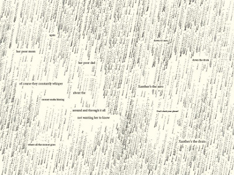
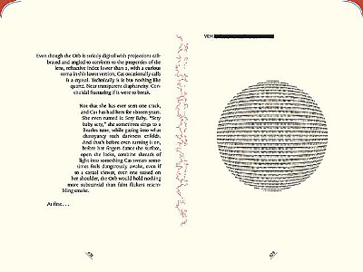
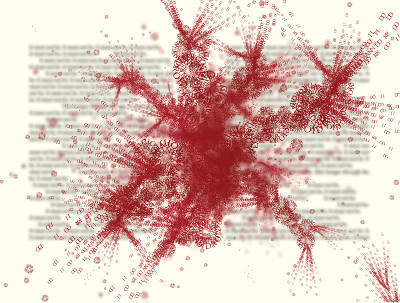
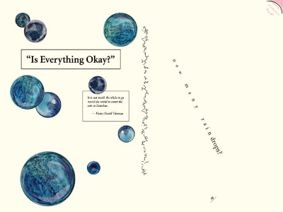

Původně to měla být odpověď do diskuze, ale krapet mi to přerostlo.
Na čem dělám, hm, hm. Trochu problematicky definované, protože toho mám rozpracovaného spoustu, ale jsou to věci, kterým se věnuji jen třeba jednou za pár měsíců na půl hodiny, když se mi chce. Takže vezmu asi jen ty aktivnější věci.
To už jsem zmiňoval v blogu. Nechci se tu věnovat tématu a rozpitvávat to, spíš to vezmu prakticko-technicky:
Píšu jí v Sigilu, což je OpenSource editor .epub souborů. ePuby mám rád, protože jsem s nimi už pracoval (doslova jsem byl za ně placený), taky protože jsem četl jejich specifikaci a protože jsou jednoduché (je to jen přejmenovaný .zip s trochou metadat a HTML texty).
Sigil mě štve, protože je v mnoha různých ohledech retardovaný. Wysiwyg část je napůl nepoužitelná, občas zkurví underlying HTML kód a občas prostě jen nefunguje. K tomu je to celé rozbité co do klávesových zkratek, takže některé nejdou přemapovat a navíc to umí editovat jen .epub, nikoliv složku, což se pekelně blbě verzuje v GITu. Zkoušel jsem používat nějaké ty virtuální filesystémy, které umí mountnout .zip, ale celé to skončilo katastrofou (korupce archivu) a nefungovalo to, když jsem ten .zip měnil. Zakládal jsem na githubu issue, ale byl jsem poslán do hajzlu.
Sigil mě ale sere i z hlediska naprosté absence jakékoliv automatizace a scriptovatelnosti. Jediné co umí je vkládat snippety s pár nahrazením skupin, ale celkově je to bída. Například poznámky pod čarou se musí dělat prostě natvrdo (prostě jí ručně napsat na konec kapitoly, vložit odkaz který na ní skočí a pak odkaz, který skočí zpět a celé si to ostylovat přes CSS), což je problém, když přidáte poznámku mezi dvě další, tak její číslo se samozřejmě nepřepočítá. Prostě sračka.
Dělal jsem extenzivní průzkum existujících ePub editorů, ale všechno je to buď ještě větší sračka, nebo placené a nedostupné pod linuxem. Mohl bych si placený software dovolit, ale nechce se mi něco kupovat a pak se srát s Wine a zkoušet to editovat.
Na psaní blogů běžně používám CherryTree, jenže problém je, že ta interně používá richtext sračky, a celé je to divně propletené a zmatené. Psal jsem z toho konvertor, ale funguje jen tak z 80% a u knihy si to fakt nelajznu, nehledě na to, že občas to HTML fakt chci editovat.
Řešení je jen pár: používat Sigil a trpět, zkusit ukrást (a pak samozřejmě koupit, pokud pojede na linuxu a nebude sračka) nějaký profi editor, nebo si naprogramovat vlastní.
Co se postupu týče, zatím to má asi 200kB komprimovaného textu.
Problém mám taky s obrázky chtěl bych tam mít ilustrace, protože jinak je to prostě jen hrozivý blob textu. Různé schématické obrázky někde mezi komixem a UML. Vím co tam chci a umím to nakreslit, ale ..
Minulý rok jsem si koupil kreslící tablet, ale ukázalo se, že můj mozek to prostě nechápe. Celý život strávený na relativních polohovacích zařízeních a nejdnou se to chová absolutně. Software na kreslení na linuxu taky stál za totální prdel, tak jsem ten tablet prodal na aukru.
Teď hodně uvažuji, že si koupím iPad pro na kreslení. Koukal jsem na youtube a ten software je sice placený, ale o celé světelné roky jinde, než cokoliv co se dá sehnat na linux. Je to neporovnatelné co do ergonomie, doslova to nemá ani žádný protiklad v podobě software na linuxu.
Hrál jsem si taky s vektorizací ručně kreslených obrázků v inkscape, ale bylo s tím příšerné práce (ta vektorizace, ne kreslení perem) a výsledek nic moc. Upravovat myší vektory prostě není úplně ono. Takže asi iPad, až dostanu zase náladu.
Mám tu ke dvoum desitkám rozepsaných článků, blogů a povídek. Já jsem hodně intuitivní typ autora, potřebuji mít chuť a náladu a pak to jde samo, jinak se do toho musím hrozně nutit. Povídky jsou v tomhle nejhorší, protože občas prostě začnu, napíšu pár kilobajtů textu a pak mi trvá roky, než budu mít zase tu správnou náladu. Ale postupně to roste.
Dal jsem si předsevzetí, že minimálně ty povídky chci do konce roku dopsat. Není jich zas tak moc, tři co mám hodně rozepsané a další tři, kde mám jen základní nápad. Ty tři chci určitě dotáhnout a publikovat.
Co se blogů a článků týče, tak se to snažím poslední dobou nějak zredukovat, jde to o hodně líp než povídky, takže se to tu bude postupně objevovat. Pár z nich je skoro připravených, jen to bude chtít doladit posledních 20%.
Potřeboval bych nesmrtelnost, nebo rapidní download informací do mozku*. Lidský život je hrozně krátký a mojí rychlostí čtu jen mizerných 50 knih ročně a to ještě jen když je dobrý rok. To je příšerně depresivní. Jen můj TODOstack, kde mám věci které mě právě teď zajímají a někde jsem je stáhl, či koupil budu číst tak příštích 6-10 let.
*Poslední dobou jsem si hrál s speed reading aplikacema. Takové ty věci, kam hodíte text a ono vám to pak bliká slovo za slovem před očima rychlostí 500 slov (nebo kolik zvládnete) za minutu. Samozřejmě takhle nejdou číst všechny knihy, ale některé ano. Taky to používám jako doplněk do Chromia. Na iOSu jsem si musel koupit aplikaci Velocireader, protože všechny ostatní stály za hovno. Tím myslím i všechny ostatní placené, vyhodil jsem za to pár desítek euro, ale pak jsem si od Apple nechal peníze vrátit, protože to prostě nešlo používat. Některé aplikace padaly, jiné prostě jen byly jen fakt špatně udělané.
Začal jsem se teď věnovat víc fyzickým knihám. Mám celou jednu poličku věnovanou rozečteným a čekajícím knihám a rád bych se jich co nejvíc zbavil. Tak teď čtu několik knih najednou, podle chuti. Koupil jsem si křeslo, každý den si do něj sednu a snažím se si vyhradit čas jen na čtení.
Mám rozečteno a fyzicky roloženo kolem křesla:
Mezi nimi náhodně přepínám podle toho na co mám ten který den chuť, asi jako tlusťoch, který se v noci vloupe do obchodu se sladkostma, vysype si je kolem sebe na podlahu a pak leží a žere vždycky trochu z téhle hromádky a trochu z téhle..
No a až to dočtu, tak na mě čeká na na poličce:




V ebook readeru a ipadu toho mám narváno tolik, že kdyby to byly fyzické knihy, tak ohýbají prostor kolem sebe. Občas je v noci slyším, jak skučí, šeptají a volají na mě..
Za poslední měsíc jsem dočetl Tvorba open source softwaru, Čistý kód a pár dalších nevýznamných knih.
Přečetl jsem už skoro všechno od Neala Ashera, zbývá mi jen pár kratších novel. Departure (a celá ta trilogie) bylo příšerně depresivní, ale dobré a nápadité. Dystopie, takové úrovně, že tam bagry shrabují mrtvoly devíti miliard lidí do moře. Infinity engine má skvělou pointu.
Teď skončila druhá série Billions. Taylor je zajímavá postava. Vyšla první epizoda třetí série Ricka & Mortyho a je naprosto grandiózně geniální. Vychází Archer, Silicon Valley a Genius. Orange is the New Black mi uniklo, že vyšla čtvrtá série a teď někdo leaknul pátou, tak mám o zábavu postaráno.
Z toho co vyšlo na mě zapůsobila Expanse a Jonathan Strange & Mr. Norrell. Taboo bylo nanejvýš excelentní.
Z anime koukám na vycházející druhou sérii Attack on titan a je to fenomenálně epicky dobrý. Zatímco první série nebyla špatná, tak tohle je nejlepší akce, kterou jsem kdy kde viděl. Ty epizody druhé série nemají hluchou ani minutu.
Stáhnul jsem si Shinsekai Yori, ale ještě jsem se k tomu nedostal, kromě první epizody. Vypadá to zajímavě. Viděl jsem zatím asi půlku Zankyou no Terror, ale nejsem z toho moc unešený. Rozkoukal jsem pár epizod Mushishi, ale je to spíš takové pomalé a melancholické. Jednou za pár týdnů si vždycky pustím epizodu a mám dost. Viděl jsem první epizodu Boku dake ga inai mači a vcelku příjemně to na mě zapůsobilo. Genshikenu jsem shlédl asi 4 díly a je to fajn. Kino no Tabi mám rozkoukané celé roky a čas od času si dám jednu epizodu. Je to alegorické filosofické anime a člověk se nad tím musí zamyslet. Taky jsem viděl tři epizody Planetarian.
Z filmů nějak nevím, co bych doporučil GITS reimplementace byla docela sračka, zcela dle očekávání. Royal Space Force: The Wings of Honnêamise na mě fakt zapůsobilo propracovaným alternativním světem, který je podobný, ale v tisíci detailech jiný. Líbil se mi Accountant, kvůli hlavní postavě autisty. Konečně někdo, kdo se nechová nesmyslně. Louie byl super, dal jsem to celé asi za dva týdny a když jsem skončil, připadal jsem si, že jsem přišel o kamaráda. Tyhle tři scény mluví za vše: Louie CK witnesses a homeless guy being switched a Louie, Subway Busker & the Homeless Man a louie subway scene. Je to primárně vtipné, ale taky o životě tím způsobem, jakým o něm vypráví málokdo. Určitě doporučuji. The Young Pope mě taky zaujal.
Sjíždím Jarmushe. Noc na Zemi bylo skvělé a Hranice ovládání zajímavé. Mrtvého muže jsem viděl už dávno. Ghost doga taky a pořád si na něj čas od času vzpomenu. Nedávno se mi o něm zdálo, tak jsem si do čtečky potáhl Hagakure.
Snažím se přidat podporu unicode, alespoň pro xlib vstup a výstup. Vstup už jsem udělal, výstup více/méně vytrasoval, ale ještě to nerozchodil. Původně se mi do toho fakt nechtělo, ale nikdo jiný to prostě neudělá. Tak jsem si trochu připomenul C++, nastudoval xlib a aspoň se něco naučil.
K tomu jsem rozdělal několik modulů a rád bych časem implementoval i package manager, protože je prostě potřeba.
O Selfu mám taky rozepsaný článek (možná spíš sérii), kde je hotová první část z asi tří až pěti.
Přemýšlím nad meta-knihovnou, která by byla distribuovaná mezi všemi jejími členy. Když dočtu knihu, kterou nijak moc netoužím vlastnit, tak do ní napišu že je svobodná a nechám jí někde v kavárně, nebo v knihobudce. Přemýšlím nad systémem, že bych je někde centrálně evidoval a s kamarády si je pak různě vyměňoval. Chtělo by to do nich dát nějaký štítek s identifikací, ať člověk, který knihu najde jí může zaevidovat že jí má a případně půjčit zase někomu, kdo vyjádří zájem.
Doma se mi už kupí celá hromada knížek, které tu mít nechci. Původně jsem měl v plánu je dát brmlabu, ale je jich tolik a jsou těžké, že jsem byl zatím líný je tam nosit a nemám auto. Teď přemýšlím, jestli z nich neudělat základ sdílené meta-knihovny.
Přemýšlím taky nad čímsi jako wiki, co by sloužilo pro výměnu informací mezi lidmi a teamy, akorát by to nebylo na centrálním místě, ale vyměňovalo by si to články a jejich patche v síti kontaktů, trochu podobně jako usenet, akorát míněno primárně pro tvorbu článků a tvorbu knowledge base. Vymýšlím to čistě proto, že bych něco podobného asi potřeboval.
V práci používám jako notebook x220 a nemůžu si to vynachválit. Ten hardware je fyzicky naprosto super co se týče vzhledu, velikosti a klávesnice. Obrazovka by potřebovala vylepšit (ta moje verze není IPS) a paměť (mám tam 8G) a procesor taky, ale to zas tak moc nebolí při každodenní práci, když mám v práci k dispozici virtuální server, kam můžu offloadovat věci jako testovací databáze a tak.
Pracuji jako python programátor a za editor používám Sublime, takže to nežere zas tak moc prostředků a nemám takové potřeby, jako lidi co mají nenažrané IDE.
Dělám 4 dny v týdnu, pátý den mám volný. Snažím se ho věnovat psaní a programování vlastních věcí, v čemž mě momentálně hodně brzdí rozbitý stav Selfu, ale dělám na tom. Zatím mám novou práci jen měsíc a půl, tak je brzo na vyhodnocení, jak moc je ten den volna použitelný a jestli ho neproflákám, nebo to nebude chtít třeba dva dny volna.
Snažím se vybalancovat osobní život. Trochu měním oblečení. Chci zkusit posilovnu, nejmladší brácha tam chodil a fakt se to na něm hodně opticky projevilo. Jen mám cringe z toho tam prostě přijít, když o tom nic nevím.
S přítelkyní to různě skřípe. Naučil jsem se to moc neřešit, ženský jsou prostě ženský a je třeba to akceptovat, ne s tím bojovat. Nejvíc mě na ženských pořád mate, jak když si stěžují, tak většinou nechtějí, aby to člověk řešil. Chtějí si prostě jen stěžovat a když to začnete řešit, tak jim to vadí. Ale pak si občas stěžují a hrozně je nasere, když to neřešíte. Na to abych to uměl rozpoznat zatím pořád ještě nemám dost dobrý mentální model a začínám pochybovat, že kdy budu. Takže k tomu přistupuji flegmaticky.
Už asi 8 měsíců mám padawanku. Prostě mi jednoho dne napsala nějaká holka, jestli bych jí nechtěl učit. Napsal jsem kdysi motivační článek kam jsem dal email a lidi pořád i po letech píšou. Samozřejmě, že jsem odpověděl, že ne, stejně jako všem před tím. Její email a snaha se někam posunout mě ale zaujala a zdála se mi upřímná, tak jsem jí alespoň nabídl, že můžeme vést konverzace a vyměňovat informace, že jí můžu dohazovat zajímavé knihy a tak podobně. Tak jsme si psali, každý měsíc třeba jeden dva emaily.
Na začátku tohohle měsíce napsala, že se jde zabít. Nesouviselo to se mnou, prostě mladá holka, anorexie, problémy doma, ve škole, puberta, emocionální nestabilita. Zkoušel jsem jí to po emailu do čtyř do rána rozmluvit, ale nevyšlo to. Nechtěla se hádat, prostě mi to oznamovala. Poté co bylo vyhlášeno pátrání jí našli hasiči termovizí, naštěstí živou a teď je někde v blázinci, nepustí jí k počítači a mobil má jen na hodinu denně. #life
Lidi kolem mě jsou křehké konstrukty, každý druhý má nějaký problém a různě se rozpadá a já se je snažím opravovat. Někdy to jde, jindy ne. Když chci a mám sílu, tak je většinou dokážu spravit. Stojí mě to soustředění a koncentrovanou snahu, ale jde to. Problém je, že jakmile od nich odvrátím pozornost, tak se zas rozpadnou. Jednou jsem to zkoušel opravovat na hlubších úrovních, ale vyděsilo mě to, dal jsem si zpátečku přestal.
Přemýšlím, že bych jel zase do Chorvatska na dovolenou. Byl jsem tam před pár lety s kamarádem a jeho rodinou a bylo to bezchybné. Skoro týdny jsem nezapnul počítač a vůbec mi to nechybělo. Asi bych vybral ostrov Murter, kde jsme byli u známých poslední den a bylo to tam skvělé, lepší než Vrbice a míň komerční.
Já vím, je to takové klišé, Čech v Chorvatsku, navíc jsou i hezčí země a dovolená je trapná a plýtvání peněz, ale .. ale. Občas se zamyslím a vidím moře, s modrou oblohou, jak se na něm líně valí vlny. Slyším řev cikád mezi olivníky, u kterého jsem si myslel, že nebudu moct spát a usnul jsem okamžitě, vzpomínám na tu vyprahlou kamenitou krajinu, která je krásná.
No a to je asi všechno, co stojí za zmíňku. Podělte se taky, buď formou samostatného blogu, nebo pod diskuzním mikroblogem, ať se to dá všechno najít.
{kind=link}
{kind=link}
{kind=link}